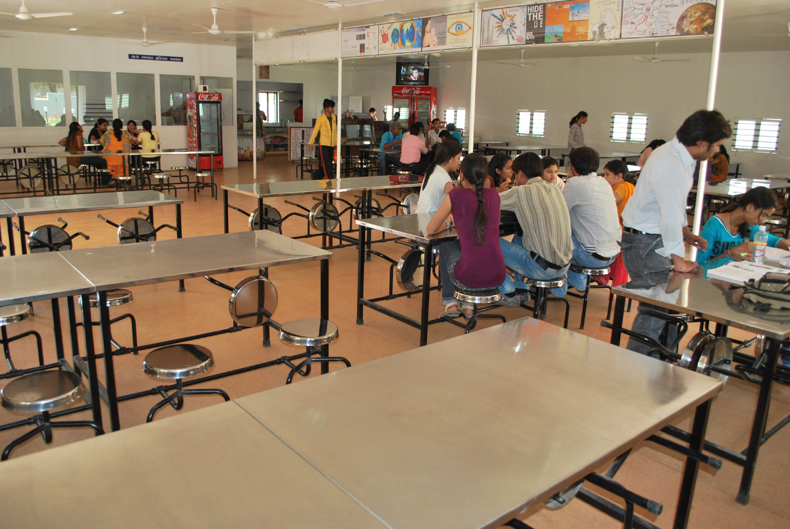

.gif) Robotics School
Robotics School
Computer Laboratories
The School has four Computer Laboratories. Lab 1 being equipped with 40 Pentium machines and connected by Intranet. Labs 2, 3 and 4
are equipped with 104 IBM compatible computers connected with Novell Network. The Labs are equipped with eight printers.
Students of Grade 1 to 12 are taught Computer Science.
Science Laboratories
The school has five well-equipped Science Laboratories for Physics, Chemistry, Biology, Engineering Graphics and Home Science.
Well-qualified and experienced instructors are available in each of the laboratories in order to provide personal guidance to each
student.
Recess Radio
The Recess Radio is an in-house entertainment channel that is by, of, and for the students of the school. Aimed at fostering a
sense of oneness and belonging the Recess Radio offers "infotainment" by way of news, views, interviews and reviews for the
students daily during the recess break.
Aryabhatta Reference and Research Centre
Housing a collection of over 40,000 titles, 20 workstations, exclusive browsing areas, collaborative learning zones, extended and
virtual classrooms, 200 CDs and over 100 international periodicals and newspapers. The Aryabhatta Reference and Research Centre is
a veritable store house of information and knowledge.
This exclusive electronic library which is open to staff and students also offers a reprographic section and the convenience of
extended working hours.
Apart from the research centre the school has a distinct Junior library to cater to the needs of middle school students. Books,
question papers and journals relating to this age group are freely available in these libraries.
An audio visual library with an overwhelming collection of audio and video cassettes, is used extensively for multimedia classes
and demonstrations.
Sports Centre
To build a healthy body that can ensconce a healthy mind, the school has over the years invested heavily in acquiring and adding
infrastructure specifically designed to satisfy the physical training requirements of the students.
The Department of Human Performance takes care of training in sports and games through qualified Physical Education teachers.
The school provides facilities for training in Cricket, Football, Basketball, Volleyball, Table Tennis, Chess, Swimming, Throwball,
Karate as well as Athletics.
The Indian High School Sports Festival, an annual inter school sports meet is undoubtedly the highlight of the school's sporting
calendar. Schools from all over the U.A.E. participate in this week long festival, which covers various disciplines of sport.

School Canteen
The school canteen serves healthy and nutritious snacks and juices at reasonable costs. A strict standard of hygiene is maintained
by the vigilant staff.

School Transport
The school has a fleet of 85 air conditioned buses which access different areas of Dubai for the benefit of staff and students.
Children are picked up and dropped off at pre-determined bus stops which are fixed after a thorough survey of the area and bearing
in mind the safety and security of the child.
School Health and Medical Centre
The school has two Medical Officers on its rolls assisted by four qualified and trained nurses. The Medical Centre maintains the
health record of every child. Emergency First-Aid is provided in case of accidents and the child rushed to the nearby hospital if
the situation so warrants.
School Store
The school store supplies prescribed Text books, School badges, Calendars, Syllabi, Notebooks and Workbooks. In order to maintain
uniformity and meet specifications it is recommended that parents make use of the facility for their requirements.